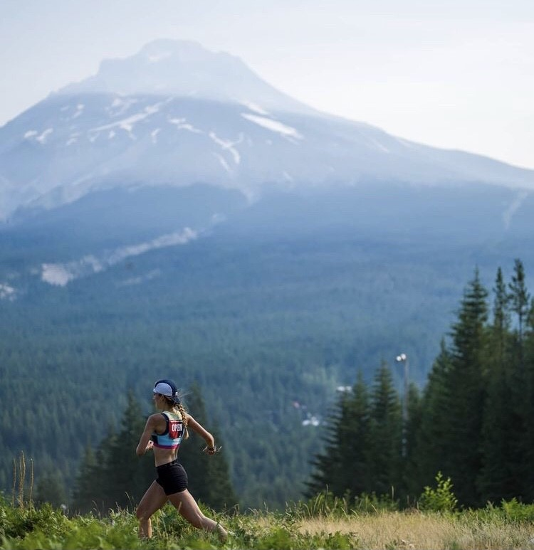
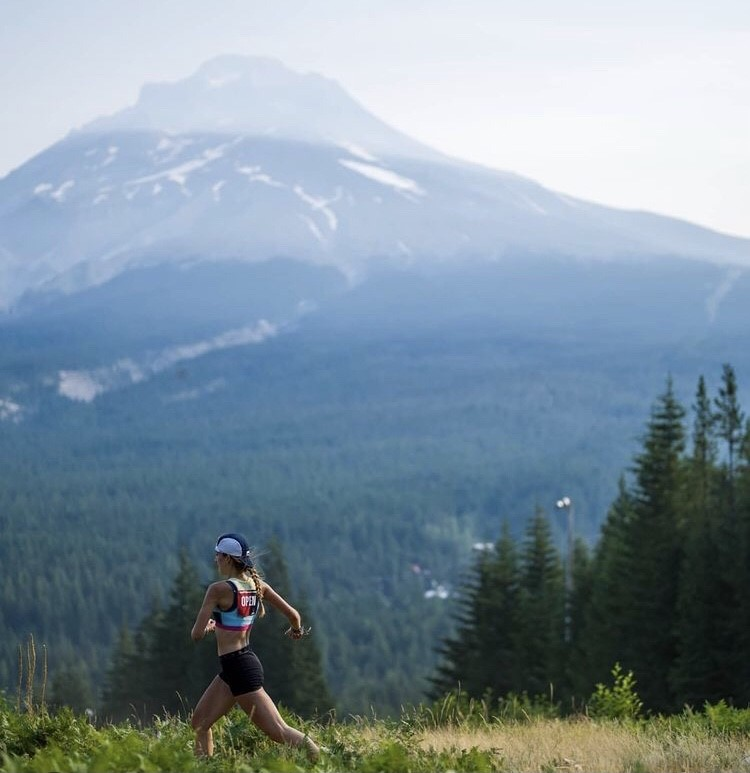

Kristina Randrup | Cartographer & GIS Analyst
I like numbers and maps.
Read about my education and experience,
view my portfolio, find me on
LinkedIn,
and learn about me.
Feel free to reach out and contact me at kristina.randrup@gmail.com
 
Washington State Elevation Basemap // Gnar Gnar, USA Mountain Running Championships 2021

Washington State Elevation Basemap // Gnar Gnar, USA Mountain Running Championships 2021